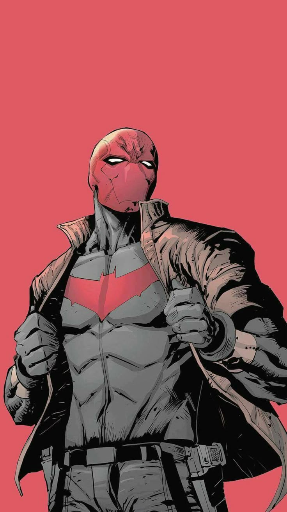
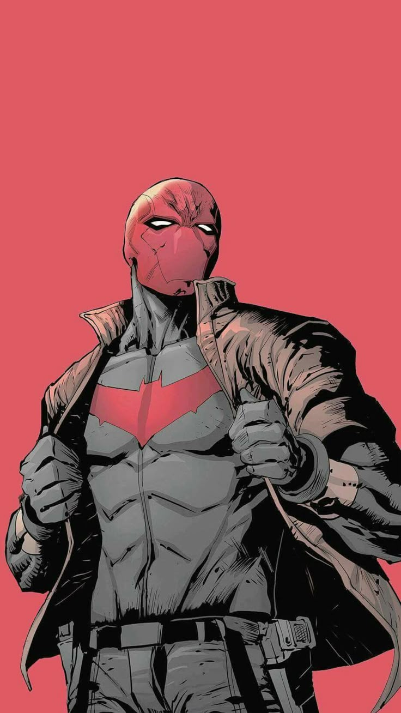

Jason Todd impede assalto no Beco do Crime
10/05/2006
O anti-herói agiu rapidamente durante o assalto, protegendo os cidadãos e prevenindo que o criminoso escapasse.
gothamvickvali
 


Capuz Vermelho (Jason Todd) era um Robin antes de virar o Capuz Vermelho. Foi bem sucedido e seguiu como um heroí independente.
10/05/2006
O anti-herói agiu rapidamente durante o assalto, protegendo os cidadãos e prevenindo que o criminoso escapasse.
gothamvickvali